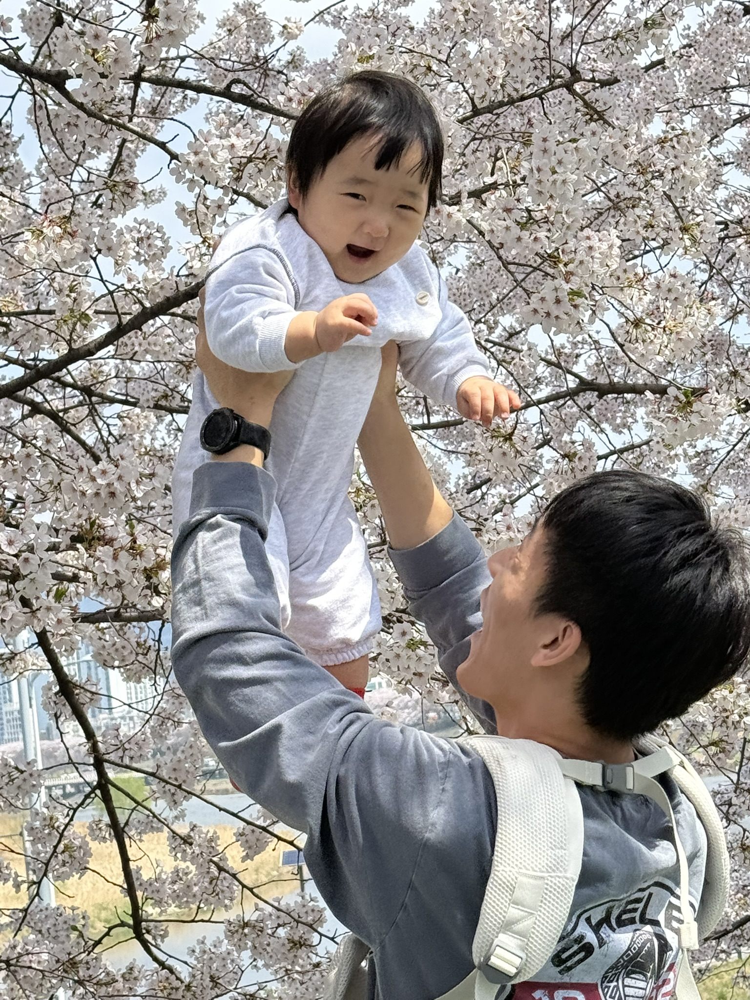

해린이에 대하여

우리 해린이는 엄마아빠 앞에서 웃음이 많아요.
낯선 환경은 싫어하구요
낯선 사람이 만지는것도 싫어해요.
집순이여서 산책을 할 때는 웃음이 사라지구요,
아파트 입구만 들어오면 다시 씨익~ 하고 웃는답니다.
해린이는 웃을 때 눈웃음이 너무 이뻐요.
한쪽만 들어간 보조개가 매력적이구요,
엄마, 아빠랑 장난칠 때 새초롬하게
v(브이) 하는 입술이 정말 귀엽답니다.
해린이는 먹는것도얼마나 잘먹는지
어린이집에서 제일 커요 ^^
배가 얼마나 볼록한지 기저귀 갈때마다 놀란답니다.
언젠가는 들어가겠죠??? 기도해주세요!
해린이가 좋아하는 음식은 닭고기 입니다.
닭고기 들어간 국, 닭고기 조림, 닭고기 야채볶음
남김없이 다 먹을 수 있어요! 근데 아직......
김치는 싫어요. 귀신같이 뱉습니다.
또 해린이가 세상에서제일 좋아하는건 할머니 품 같아요.
할머니 집에 가면 엄마 품으로 잘 안옵니다.
요즘은 또 안기는걸 조아해서 할머니들만 보면 폭하고 안겨요.
이렇게 이쁜 시기에 양가 할무니들이 해린이 많이 보러 와주세요.